CNN Digital, one of the world’s leading digital news brands
Barbara Ehrenreich, author and activist
Rea Hederman, publisher, The New York Review of Books
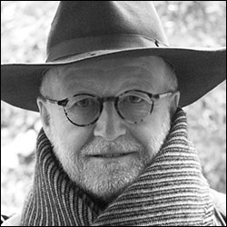 Gerd Ludwig, photojournalist, documentary photographer
Merrill Perlman, copy editor
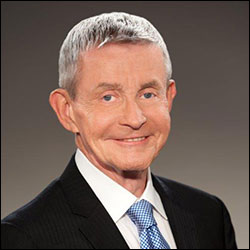 Bill Plante, Senior White House Correspondent, CBS News
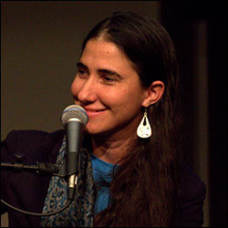 Yoani Sanchez, Cuban blogger, journalist, entrepreneur
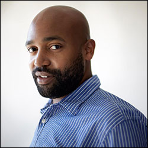 Lincoln Stephens, co-founder, The Marcus Graham Project
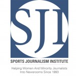 Sports Journalism Institute, training-internship program
Byron E. Calame, respected editor/ombudsman
Audie Cornish, co-host of "All Things Considered"
The Guardian, 193-year-old newspaper
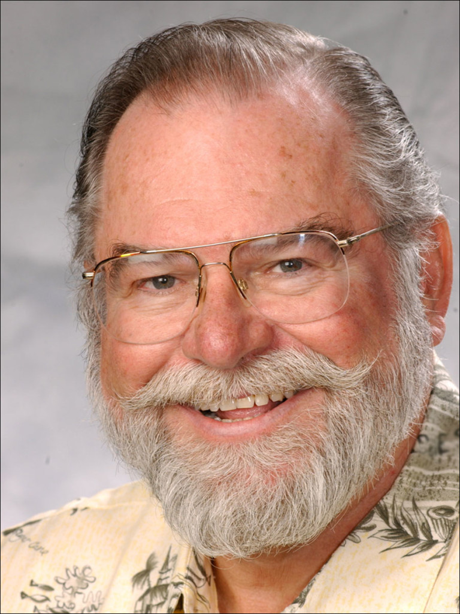 Steve Kopcha, advertising leader, educator
The staff of the Kyiv Post, Ukraine’s leading English-language newspaper
 Eugene Richards, photographer, filmmaker and writer
Eugene Richards, photographer, filmmaker and writer
 WIRED, technology media outlet
WIRED, technology media outlet
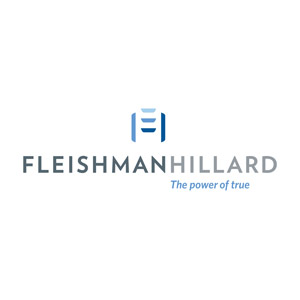 FleishmanHillard, global communications firm
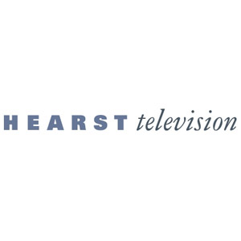 Hearst Television, national multimedia company
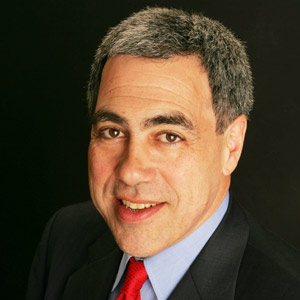 Michael Golden, New York Times executive
Carol Guzy, staff photographer, The Washington Post
Greg Lee, Executive Sports Editor, South Florida Sun Sentinel
Charles Lewis, author and investigative journalist
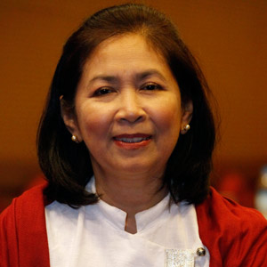 Aye Aye Win, correspondent, The Associated Press-Myanmar
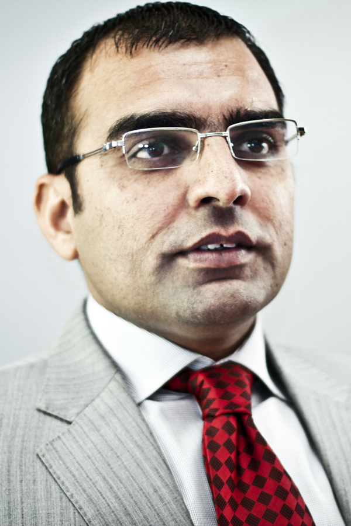 Umar Cheema, investigative reporter, Pakistan
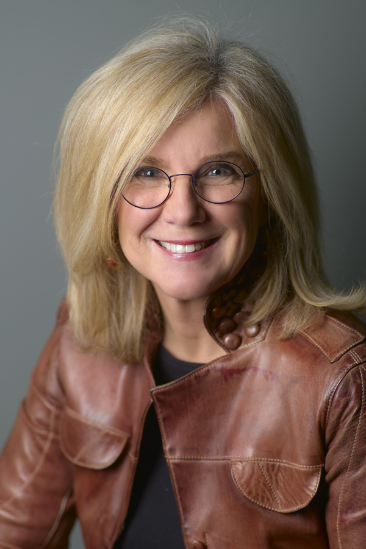 Jodi Cobb, photographer and author
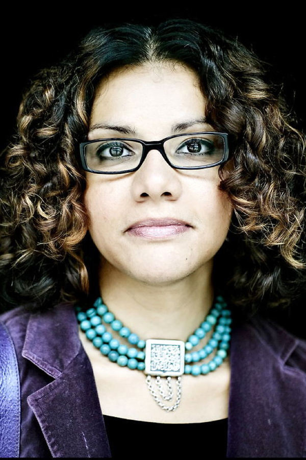 Mona Eltahawy, columnist and cyber-activist
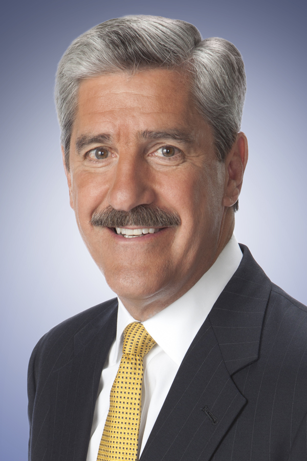 John Ferrugia, investigative journalist, KMGH-TV
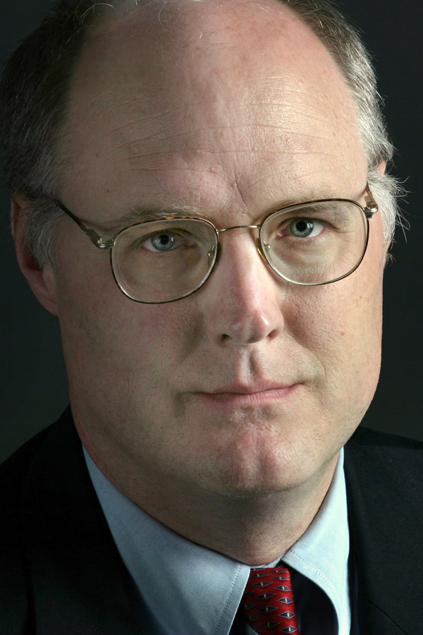 Jeff Leen, Washington Post Investigative Unit
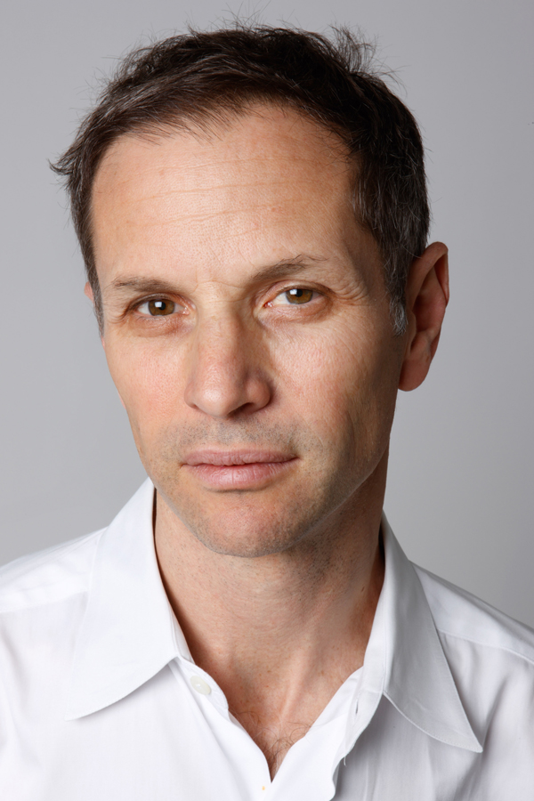 Adam Moss, Editor-in-Chief, New York Magazine
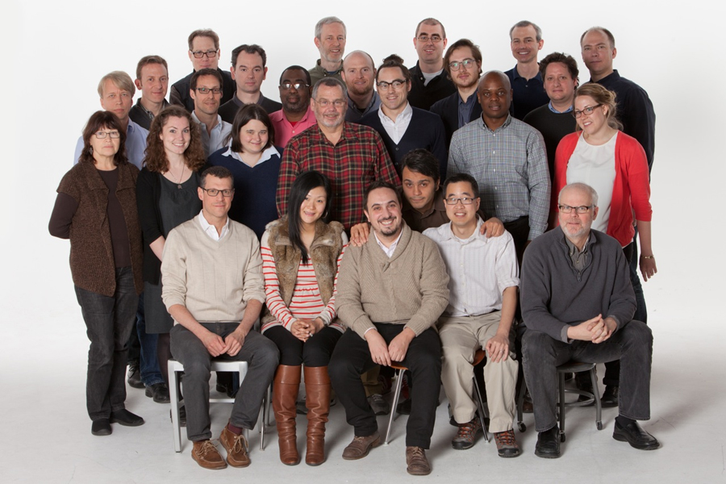 NYT Graphics Dept., The New York Times
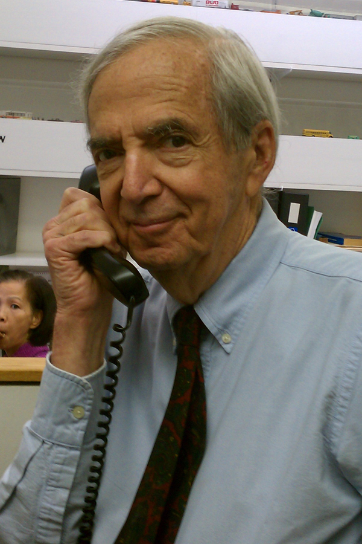 Fred Papert, advertising executive
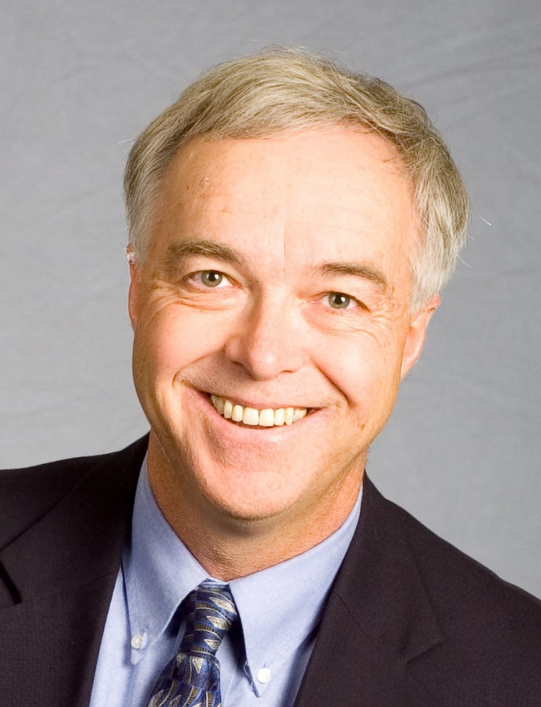 Ken Paulson, President/CEO, First Amendment Center
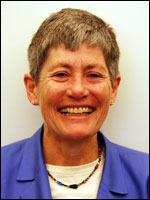 Margaret Wolf Freivogel, founding editor, St. Louis Beacon
FRONTLINE, investigative documentary series
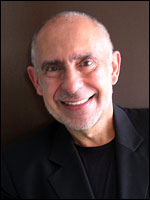 Mario R. Garcia, CEO and founder, Garcia Media
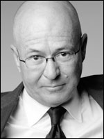 David Granger, Editor-in-Chief, Esquire Magazine
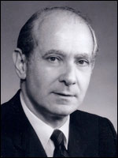 Robert S. Leaf, Chairman, Robert S. Leaf Consultants
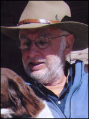 Danny Lyon, photographer, filmmaker and writer
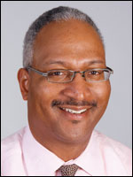 Mark Russell, editor, The Orlando Sentinel
Süddeutsche Zeitung, largest daily newspaper in Germany
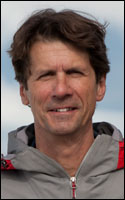 James Balog, founder, Extreme Ice Survey
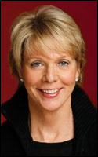 Cathleen Black, media executive
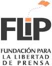 The Foundation for the Freedom of the Press (FLiP), Bogotá, Colombia
Dorothy J. Gaiter, wine columnist, author
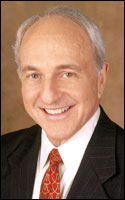 Myron Kandel, financial journalist
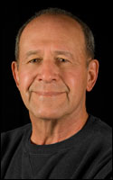 Larry Postaer, Co-Chairman, Rubin Postaer & Associates
 Sandy Rowe, editor
Sandy Rowe, editor
ZETA, weekly newspaper, Tijuana, Mexico
Mazhar Abbas, defender of press freedom, Pakistan
Rance Crain, President, Crain Communications Inc.
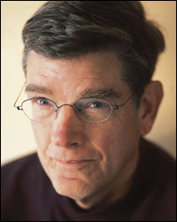
Doug Crews, Executive Director, MPA
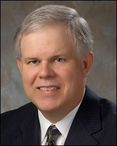
Bill Eppridge, photojournalist
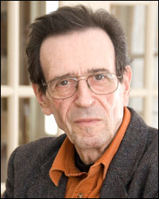
Rod Gelatt, professor emeritus, Missouri School of Journalism
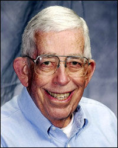
Deborah Howell, editor and ombudsman
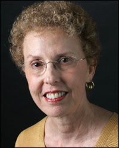
Slate, daily online magazine
Wayne Brasler, University of Chicago High School
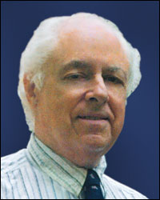
Dirck Halstead, publisher, digital journalist

Frances L. Lewine, Associated Press, CNN
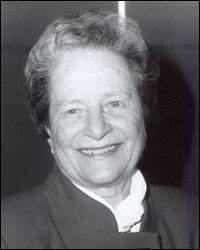
Paula Madison, V.P. Diversity, NBC Universal
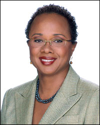
Russ Mitchell, anchor, CBS News
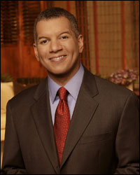
Oh Yeon Ho, founder, OhmyNews.com
Mary Beth Price, founder, Empower MediaMarketing
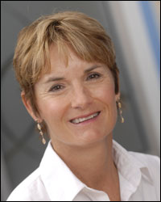
William C. Price, CEO, Empower MediaMarketing
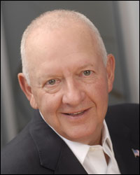
Ruth Reichl, Editor-in-Chief, Gourmet
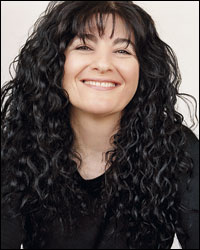
Clifford Christians, professor, editor and ethicist
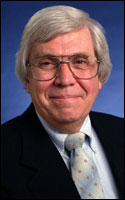
Committee of Concerned Journalists (Bill Kovach and Tom Rosenstiel)
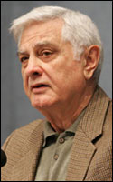
Chuck Curtis, BJ ’67, MA ’70, Chairman, Valentine Radford
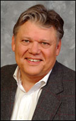
Reza Deghati, photojournalist, founder of AINA
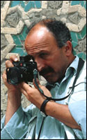
Karen Brown Dunlap, President, Poynter Institute
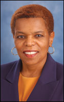
Zubeida Jaffer, journalist, editor, activist
John Seigenthaler, journalist, editor, publisher
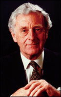
KHOU Defenders, Houston, Texas
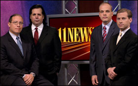
Alejandro Junco de la Vega, publisher
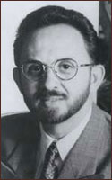
Angus “Mac” McDougall, photographer

Lisa Myers, BJ ’73, correspondent, NBC
Paul Steiger, Wall Street Journal
Carol H. Williams, President/CEO, Carol H. Williams Advertising
Dr. Leo Bogart, mass media sociologist
Anne Garrels, NPR Foreign Correspondent
James Nachtwey, photojournalist
Gloria Steinem, writer, editor, activist
Dr. William H. Taft, BJ ’38, MA ’39, Missouri School of Journalism
Ernest C. Withers, photojournalist
TEMPO, Indonesian news magazine